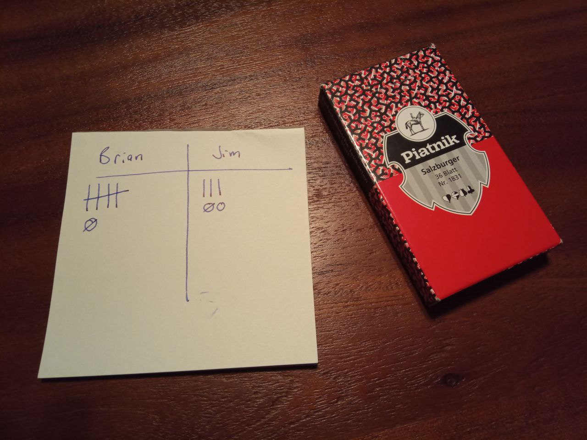

Get rid of high cards wisely and win with the lowest score in this fiesty Jass.

Setup
With a 36 card deck (6-A), shuffle and divide the deck equally between each player, dealing out in groups of three cards.
- With three players 4x3 each.
- With four players 3x3 each.
- With five players, remove the 6 of bells/diamonds and then deal 4+3 each.
Object of the Game
The aim of the game is to score as low as possible by make as few and as cheap tricks as possible. And avoid being bombed with a molotov!
Scoring
When you win a trick, you add the cards’ point value to your score. The player that makes the final trick gets an additional five points.
Molotovs!
If a molotov appears on the table, the winner of the trick gets bombed another 20 or 50 points. A molotov is three or four cards of the same suit in sequence.
- Small molotov = three in a row
- 20 points
- Large molotov = four in a row
- 50 points
- Only possible with 4+ players
- Examples
- 6-7-8
- J-Q-K
- 9-10-J-Q
| Cards by Trick Rank | Point Value |
|---|---|
| Trump Unter/Jack (“Bur”) | 20 |
| Trump Nine (“Nell”) | 14 |
| Ace | 11 |
| King | 4 |
| Ober/Queen | 3 |
| Unter/Jack | 2 |
| Ten | 10 |
| Nine | 0 |
| Eight | 0 |
| Seven | 0 |
| Six | 0 |
| -Making the last trick- | 5 |
| SUM | 157 |
Making Tricks
You win a trick by playing the highest card (by trick rank). If you win the trick, you start the next trick. As in other games, any trump card beats even the best card of another suit.
Determining Trump
The game begins without a trump and the first card played that can’t follow suit becomes the trump for the round. It applies retroactively, so if you already had a jack or nine whose suit is now trump, those become the bur/nell.
Following Suit
When an opponent starts the trick and you have a card of that suit, you must follow suit or play a trump. You can play trump even if you have that suit, but you don’t have to if you don’t have that suit (unless the played suit is trump). If you don’t have the suit played, you can play any card. If you have the suit played, but no trump, you must play the suit.
- Exception: you don’t have to follow suit with the Bur (trump Unter/Jack, the game’s highest card). The nell, however, must follow suit.
You are not required to make tricks, and can intentionally lose a trick, as long as you follow suit.
Scorekeeping
The two players with the lowest round score write one tally, the highest player writes a “sack”.
- If playing with four, one player gets neither a tally nor a sack.
- If playing with five, the lowest two write tallies, the highest two write sacks and the middle one writes nothing.
- To get “out of the sack”, the player has to make another tally, crossing through the 0 with a line:

End of Game
- The round is over when all the cards have been played.
- The game is over when one or more players reach five tallies. If several players reach five tallies simultaneosly, the lowest score of the final round decides the winner.
Other Jass Resources
- jassa.at: well-curated site of Jass rules and games (in German)
- Book: Jassen in Vorarlberg: extensive book on Jass cards, rules and history, including instructions for 33 diferent games plus a glossary of Austrian cards proverbs :D (in German)